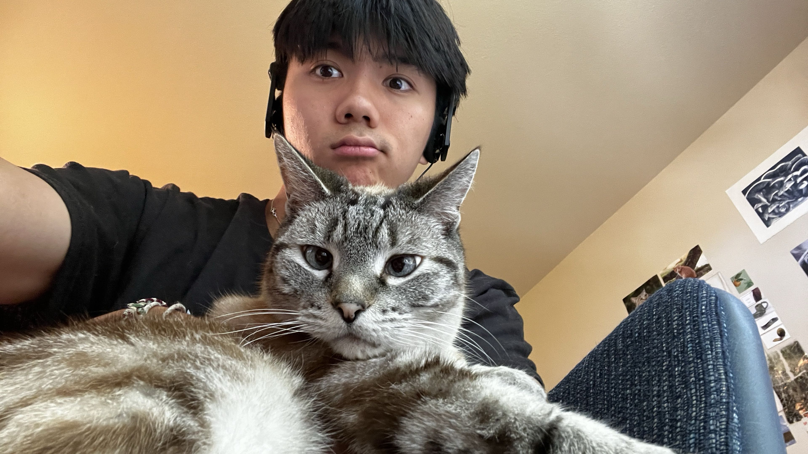
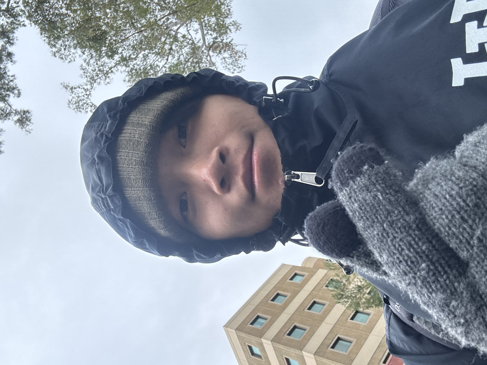

Meet the Team
Team Members

Project Lead
Russell Lin
Organized and facilitated team meetings, maintained project timelines, and ensured project goals are achieved. Contributed to the overall project from project development to presentations and reports.

Tech Lead
Sibi Sankar
Responsible for building the website and its iterations. Contributed to the overall project from project development to presentations and reports.

UI/UX Lead
Di-Yun Cheng
Responsible for the UI/UX design and interactive design through three iterations of designs from low-fi to hi-fi prototypes. Contributed to the overall project from project development to presentations and reports.

Research Lead
Jackson Nguyen
Responsible for conducting initial research on topic and gathering user research data from our users. Contributed to the overall project from project development to presentations and reports.
About the Project
What we built
We built our game, HSA Life Path, with the goal of helping younger adults understand what Health Savings Accounts are. With our scenario-based simulation game, our users will be able to go through each stage of the game and make decisions that affect their character's health, stress, savings, HSA funds, and many more.
Why we built it
Our research showed that many of our target audience don't know what an HSA is and have no current HSA account.
More than 95% don't have an HSA
More than 60% don't know what an HSA is
Over 35% are anxious about health care costs
Over 25% are annoyed about health care costs